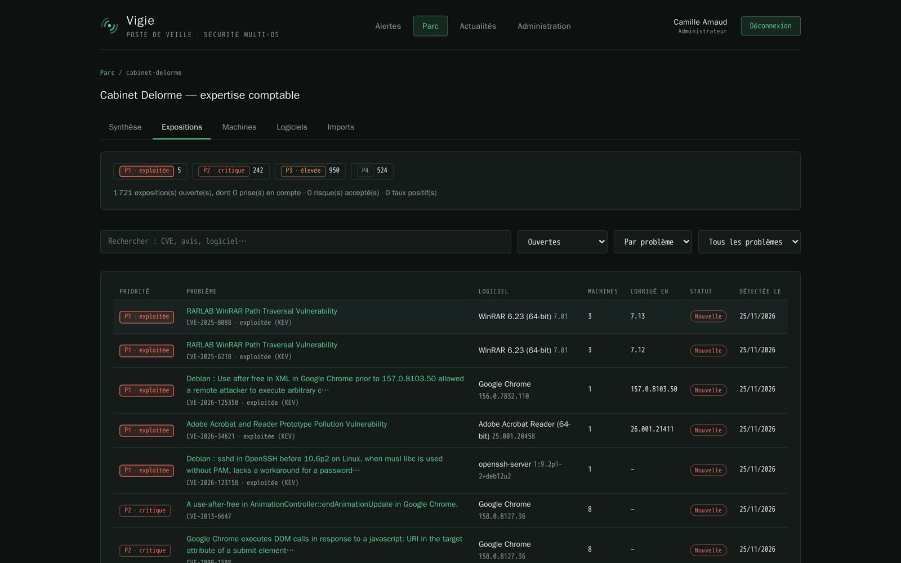

Vigie
A web portal for an IT provider and its clients. It gathers security alerts and CVEs from the official sources, sorted by operating system family; reads each client’s machines and installed software from GLPI; matches every installed version against the vulnerability catalogue and the end-of-support dates; and opens exposures with a priority, which close and reopen by themselves as the inventories change. Clients are told by e-mail, Slack or GLPI ticket, and the news of CERT-FR, CISA and the UK’s NCSC is translated and summarised by a language model. Each client sees only its own data, checked by the server and again by PostgreSQL. Built in 18 lots between 23 and 26 November 2026, in French, English and Khmer; measured on a synthetic fleet and a test GLPI.
Un portail web pour un prestataire informatique et ses clients. Il rassemble les alertes de sécurité et les CVE des sources officielles, classées par famille de système ; lit dans GLPI les machines et les logiciels installés de chaque client ; rapproche chaque version installée du catalogue de vulnérabilités et des dates de fin de support ; et ouvre des expositions avec une priorité, qui se ferment et se rouvrent d’elles-mêmes au gré des inventaires. Les clients sont prévenus par e-mail, Slack ou ticket GLPI, et les publications du CERT-FR, de la CISA et du NCSC britannique sont traduites et résumées par un modèle de langage. Chaque client ne voit que ses données, contrôlées par le serveur puis par PostgreSQL. Construit en 18 lots du 23 au 26 novembre 2026, en français, en anglais et en khmer ; mesuré sur un parc synthétique et un GLPI de test.
វិបផតថលមួយសម្រាប់អ្នកផ្ដល់សេវា IT និងអតិថិជនរបស់ខ្លួន។ វាប្រមូលការប្រកាសអាសន្នសុវត្ថិភាព និង CVE ពីប្រភពផ្លូវការ ដោយចាត់ថ្នាក់តាមក្រុមប្រព័ន្ធប្រតិបត្តិការ អានម៉ាស៊ីន និងកម្មវិធីដែលបានដំឡើងរបស់អតិថិជននីមួយៗពី GLPI ផ្ទៀងផ្ទាត់កំណែនីមួយៗដែលបានដំឡើង ជាមួយបញ្ជីភាពងាយរងគ្រោះ និងកាលបរិច្ឆេទផុតការគាំទ្រ ហើយបើកការប៉ះពាល់ដែលមានអាទិភាព ដែលបិទ និងបើកឡើងវិញដោយខ្លួនឯង តាមសារពើភ័ណ្ឌថ្មីៗ។ អតិថិជនទទួលបានដំណឹងតាមអ៊ីមែល Slack ឬសំបុត្រ GLPI ហើយការផ្សព្វផ្សាយរបស់ CERT-FR, CISA និង NCSC របស់ចក្រភពអង់គ្លេស ត្រូវបានបកប្រែ និងសង្ខេបដោយគំរូភាសា។ អតិថិជននីមួយៗឃើញតែទិន្នន័យរបស់ខ្លួន ដែលត្រូវបានពិនិត្យដោយ server ហើយម្តងទៀតដោយ PostgreSQL។ បានបង្កើតជា 18 ដំណាក់កាល ពីថ្ងៃទី 23 ដល់ 26 ខែវិច្ឆិកា ឆ្នាំ 2026 ជាភាសាបារាំង អង់គ្លេស និងខ្មែរ ហើយបានវាស់វែងលើក្រុមម៉ាស៊ីនសំយោគ និង GLPI សាកល្បង។

Browser ── /api/* only ──▶ web · Express 5
│ PostgreSQL role under row-level security
▼
PostgreSQL 18 ◀── worker · pg-boss
holds all the state │ the only process that
│ talks to the outside
▼
CISA KEV · NVD · MSRC · Red Hat · Ubuntu · OSV.dev · endoflife.date
CERT-FR · CISA · NCSC · GLPI · e-mail · Slack · language model
Navigateur ── /api/* seulement ──▶ web · Express 5
│ rôle PostgreSQL soumis à la RLS
▼
PostgreSQL 18 ◀── worker · pg-boss
tout l’état │ seul processus qui
│ sort vers l’extérieur
▼
CISA KEV · NVD · MSRC · Red Hat · Ubuntu · OSV.dev · endoflife.date
CERT-FR · CISA · NCSC · GLPI · e-mail · Slack · modèle de langage
Browser ── តែ /api/* ──▶ web · Express 5
│ តួនាទី PostgreSQL ក្រោម row-level security
▼
PostgreSQL 18 ◀── worker · pg-boss
រក្សាស្ថានភាពទាំងអស់ │ ដំណើរការតែមួយគត់
│ ដែលទាក់ទងទៅខាងក្រៅ
▼
CISA KEV · NVD · MSRC · Red Hat · Ubuntu · OSV.dev · endoflife.date
CERT-FR · CISA · NCSC · GLPI · អ៊ីមែល · Slack · គំរូភាសា
What really affects each client.
An IT provider looks after the computers of many clients. Public alerts list thousands of vulnerabilities a month; what matters to a client is the few that touch software actually installed on its machines. Vigie keeps one vulnerability catalogue for everyone, reads each client’s inventory, and tells each client — and the technicians assigned to it — which problems are open on its machines, how serious they are and for how long, with reminders as long as they stay open.
It started as a single-page watch portal that showed recent CVEs by operating system family, without accounts or clients. A specification written on 23 November 2026 turned it into a multi-client platform sized for about 50 clients and 5,000 machines, built lot by lot: each lot starts with a detailed plan, validated before any code is written, and ends with the tests green, the documentation updated and a written report of what is done, what remains and what is still open.
The general watch stays public: the Alerts page opens without signing in, showing critical and high CVEs by default, sorted into Windows, macOS, Linux, BSD/Unix, Android and iOS. Everything else needs an account, with two-factor sign-in compulsory for the provider’s staff. Alerts are aggregated automatically: each one is to be checked against the vendor’s official bulletin before acting on it.
Five modules, one database.
| Module | What it does |
|---|---|
| Alerts | The general watch, from CISA’s KEV catalogue, the NVD, Microsoft’s MSRC, Red Hat, Ubuntu and the distributions’ databases on OSV.dev, merged by CVE: KEV adds the “actively exploited” flag and the highest severity wins. All severities are stored. Signed in, a client sees the alerts that touch its own machines. |
| Fleet | Each client’s machines and installed software, from the GLPI agent’s inventories: sent straight to Vigie by the agent, read from the provider’s central GLPI (one entity per client) or from the client’s own GLPI, or dropped as files. Machines are recognised by serial number and hardware UUID, and only the differences are written. An allow-list keeps hardware, system and software, and drops environment variables, licence keys, SSH keys, accounts and processes on arrival. |
| Mapping queue | Windows and macOS applications that are not known yet wait in a queue. The provider links each one to a known product once, for all clients, helped by suggestions drawn from the local vulnerability catalogue. |
| Exposures | One exposure per problem and machine, created when an affected version appears, closed when the next inventory no longer shows it, reopened if it comes back. The provider can mark it a false positive or accept the risk, with a reason; a client can only ask for it, and the database itself refuses that a client sets it. A “by software” view groups the problems of one version: a Windows machine missing a month’s updates carries hundreds of CVEs. |
| Notifications | E-mail, Slack and GLPI tickets, with rules per channel (below). |
| News | The publications of CERT-FR, CISA and the UK’s NCSC, translated and summarised by a language model (below). |
| Administration | Clients; users and their roles (administrator, technician, client administrator, client viewer); technicians assigned to clients; accounts created by invitation only; the inventory sources; a service status screen; and an audit trail of every sensitive action, kept 12 months. |
Every installed version, checked once.
The engine evaluates each distinct installed version once for all clients, then passes the result to every machine that has it. It runs after each inventory, for that client; and whenever the catalogue changes — a synchronisation, a new mapping, new package indexes or life cycles — for all clients within ten minutes, and at least once an hour.
| Software | Matched against | Versions compared |
|---|---|---|
| Ubuntu and Debian packages | The distributions’ databases, through the source package, found from the official package indexes | As dpkg does (epoch, tilde) |
| RHEL, CentOS, AlmaLinux and Rocky packages | Red Hat, Alma and Rocky advisories (RHSA, ALSA, RLSA) for that release | As rpm does |
| Windows and macOS applications, once mapped | The NVD’s CPE ranges, the vendor and product declared by the CVE’s issuer, Microsoft’s bulletins | The numbering chosen for the product |
| Windows itself | The full build number against the fixed build of Microsoft’s bulletins for that build | Four components |
| Systems and applications tracked by endoflife.date | End of support, or a newer version in the same cycle | — |
Priority. P1 when the flaw is actively exploited (CISA’s KEV catalogue, or SSVC “active”), P2 critical, P3 high or out of support, P4 the rest. A distribution advisory takes the highest priority of its CVEs. A resolved exposure is kept 24 months with its history.
Coverage. Measured on 24 November 2026: only 14 to 57 % of recent CVEs carry CPEs in the NVD; adding the vendor and product declared by their issuers brings it to 96 to 99 %. Software whose origin is unknown (snap, flatpak) is not compared with the distributions’ databases, to avoid false positives, and an application that is not mapped is not evaluated: the mapping queue is what extends coverage.
Sources. The catalogue holds the full CVE history — 448,000 vulnerabilities since 1999 at the first full load. CISA KEV, MSRC and Red Hat are read every 20 minutes, the NVD every 2 hours as NIST asks, Ubuntu every hour, the other distributions every 6 hours, package indexes and endoflife.date every night. A failing source never breaks the portal: its last valid data stay and the error is shown, and after any stop each source resumes where it left off.
Two locks, and tests that try to pick them.
The server checks first: every client route declares its permission, checks that the user may see that client, and filters each query by client. PostgreSQL checks again: every table holding client data has a client column and row-level security enabled and forced. The database does not trust the client named in the address, only the user’s identity, set at the start of each transaction; from its own tables it works out which clients that user may read or write. If a route forgets its filter, the database returns nothing of another client’s, and a read-only client account cannot write even if a route lets it through.
The web process and the worker connect with two different PostgreSQL roles, a third one runs the migrations, and the web may only read the vulnerability catalogue. The documentation states the limit plainly: row-level security protects against query mistakes and access-control bugs, not against a fully compromised web process — hence the split between web and worker, and the web’s minimal rights.
Proved by tests
A structural test fails as soon as a table with a client column lacks forced row-level security. Others check that client A reads and writes nothing of client B’s, that no context survives between two transactions on one connection, that a client administrator cannot promote itself, and that every client route answers 404, not 403, on another client.
Secrets kept encrypted
TOTP keys, Slack webhooks, GLPI credentials and account e-mails waiting to be sent are encrypted with AES-256-GCM, and the web never reads back those it writes. The agents’ upload secret is kept only as a hash. A command re-encrypts everything after a key rotation, tried end to end.
No inventory data leaves
Matching and mapping suggestions are computed in PostgreSQL and the worker. The web never reaches the Internet; only the worker talks to outside services. Slack receives a summary with no software, version, CVE or machine, and the language model only public texts — both checked by tests.
Uploads that are checked
An upload that presents the hardware of a known machine under another agent is set aside for the provider to accept or reject; for a sensitive client, every new machine can be set aside too. Optionally, each workstation makes its own key and certificate, approved by the provider and bound to one machine: it can no longer overwrite another.
Limits under load
One password or 2FA check at a time per account, at most two argon2 computations at once, per-address limits counted by /64 in IPv6, the agent’s secret checked before its upload is read, decompression bounded. A third party’s failed attempts do not lock out a browser where the account has already signed in.
Reviewed
Two independent reviews in lot 7: unauthenticated entry points and secrets, and isolation between clients. Each finding fixed was first reproduced by a test that failed; three were rated high. Lot 8 dealt with the lower findings left open, and lot 10 brought the shared table of versions under row-level security too.
Told once, reminded while it lasts.
Set per client, by the provider or the client’s administrator. For each channel and each event — new exposure, reopening, accepted risk expired, escalation, digest, news touching the fleet — a maximum priority and an option for exploited flaws only; by default, immediate messages up to P2 and a full digest.
| What | How |
|---|---|
| Grouping | One message per software and version and per run of the engine, not one per CVE. |
| Content | The e-mail carries the details (CVEs, software, version, number of machines), never the machines’ names. Slack gets only a summary: number and priority of the problems, and a link to Vigie. |
| Digest | Daily, weekly or monthly, in the client’s time zone: everything still open, with its age. |
| Escalation | A P1 exposure open for 7 days, a P2 for 14 (adjustable), is reported once, to the client and by e-mail to its assigned technicians. |
| GLPI tickets | One ticket per software and version in the client’s entity, followed up when machines, problems or priority change, resolved when no machine has that version any more, reopened if it comes back. Vigie reads the ticket’s state back: a ticket a technician resolved while Vigie still sees the problem is reopened only once a later inventory still shows the version. |
| Reliability | The worker writes the messages in the same transaction as its place in the exposure log, sends them under lease with retries from 1 minute to 12 hours, and respects Slack’s rate limit. Simulated crashes lose nothing and duplicate nothing, except a message sent just before a stop, which is sent again and marked as such. |
| Languages | Each channel has its language — French, English or Khmer. Account e-mails go out in the recipient’s language. |
Three agencies, read every half hour.
A public module, like Alerts. Every 30 minutes the worker reads the publications of CERT-FR (France’s ANSSI), CISA (advisories, industrial control systems included, and news) and the UK’s NCSC. A language model of the provider’s choice — Ollama running locally by default, so nothing leaves the server, or Claude or any OpenAI-compatible API — translates each title and summary into French, English and Khmer, and every morning at 7:15 writes the highlights of the last 24 hours, each point linking to its publications. The original text stays available and is the reference.
The model receives only public texts. Its answer is constrained by a JSON schema and checked again: the publications it cites must exist, and a CVE number it copied wrongly is removed. AI never creates an exposure — a database constraint forbids an AI entry from carrying version ranges — and the Alerts module has no AI in it at all.
Signed in, a client sees which items cite a CVE open on its machines, with the number of machines concerned; a publication of the last seven days that touches a client’s fleet notifies it once, by e-mail with the title and links, by Slack with the agency and figures only. News is kept 12 months.
Backed up, watched, updated without a break.
| Area | What is in place |
|---|---|
| Backups | An encrypted backup (restic) every night to S3, SFTP or a disk, with at least one destination off the server; a restore checked every week in a throwaway database, counts compared. A failed or missing backup alerts the provider. |
| Monitoring | A health probe, a heartbeat to an external service — the only way to hear about a server that is down entirely — and e-mail alerts to the administrators; a Service status screen. A stopped worker is detected in under 5 minutes. |
| Updates | Two instances of the web behind Caddy (HTTPS), updated one after the other, with migrations kept compatible with the previous version. Measured under load: no error on 170,773 requests during an update, nor on 164,272 with each instance forcibly stopped. |
| Metrics | Optional Prometheus metrics for the web and the worker, on an internal port, with no client data. |
| Going live | Rotation of the encryption key, memory limits for the containers, and a go-live checklist in the deployment guide: secrets kept off the server, a full restore done, monitoring and e-mail tested, 2FA on every staff account. |
| Volume | On a synthetic fleet of 5,000 machines and 3.7 million installations: importing one machine takes 104 ms (median), 0.67 s with its matching; the fleet and exposure pages answer in 4 to 137 ms; a full reconciliation of a client takes 11 to 12 s. A test GLPI with 1,502 machines is read in full in 153 s. |
Eighteen lots in four days.
The six lots of the original plan — foundation, fleet, matching, notifications, GLPI, news — were merged on 24 and 25 November 2026. Twelve more followed: going into production (backups, monitoring, security review), hardening, reworked queries so that row-level security also covers the shared table of versions, feedback from GLPI tickets, notified news, checked agent uploads and a certificate per machine, two web instances and metrics, and on 26 November the interface, messages and news in French, English and Khmer, and time zones. The typecheck and 595 tests pass. The figures above come from a synthetic fleet and a test GLPI 11. The repository publishes no screenshots, so this page has none.
| State | What |
|---|---|
| Built, not yet verified | The per-machine client certificate on Windows and macOS (tried on Linux with glpi-agent 1.21; a test procedure is written); the Khmer translation of the interface and messages, which awaits a native speaker’s review before going into production. |
| Not covered | Several servers or a replicated PostgreSQL: everything runs on one host. Grafana dashboards and Prometheus alerting. Windows and macOS applications not yet mapped to a product, which are not evaluated. |
| Stays in French | GLPI tickets, the server’s technical reports (source errors, audit details), logs and documentation. |
| Next | Lot 19: removing the old French-only translation columns of the news, which lot 18 stopped using. |
Ce qui touche vraiment chaque client.
Un prestataire informatique s’occupe des ordinateurs de nombreux clients. Les alertes publiques recensent des milliers de vulnérabilités par mois ; ce qui compte pour un client, ce sont les quelques-unes qui touchent des logiciels réellement installés sur ses machines. Vigie tient un seul catalogue de vulnérabilités pour tous, lit l’inventaire de chaque client, et dit à chaque client — et aux techniciens qui lui sont affectés — quels problèmes sont ouverts sur ses machines, leur gravité et depuis quand, avec des rappels tant qu’ils restent ouverts.
Au départ, c’était un portail de veille d’une seule page, qui affichait les CVE récentes par famille de système, sans comptes ni clients. Un cahier des charges rédigé le 23 novembre 2026 en a fait une plateforme multi-clients prévue pour une cinquantaine de clients et 5 000 machines, construite lot par lot : chaque lot commence par un plan détaillé, validé avant toute ligne de code, et se termine par des tests au vert, une documentation à jour et un bilan écrit de ce qui est fait, de ce qui reste et des points ouverts.
La veille générale reste publique : la page Alertes s’ouvre sans connexion et montre par défaut les CVE critiques et élevées, classées en Windows, macOS, Linux, BSD/Unix, Android et iOS. Tout le reste exige un compte, avec double authentification obligatoire pour le personnel du prestataire. Les alertes sont agrégées automatiquement : chacune est à vérifier auprès du bulletin officiel de l’éditeur avant toute action.
Cinq modules, une seule base.
| Module | Ce qu’il fait |
|---|---|
| Alertes | La veille générale, tirée du catalogue KEV de la CISA, du NVD, du MSRC de Microsoft, de Red Hat, d’Ubuntu et des bases des distributions sur OSV.dev, fusionnées par CVE : KEV appose le drapeau « exploitation active » et la sévérité la plus haute l’emporte. Toutes les sévérités sont stockées. Une fois connecté, un client voit les alertes qui touchent ses propres machines. |
| Parc | Les machines et les logiciels installés de chaque client, tirés des inventaires de l’agent GLPI : envoyés directement à Vigie par l’agent, lus dans le GLPI central du prestataire (une entité par client) ou dans le GLPI du client, ou déposés en fichiers. Les machines sont reconnues à leur numéro de série et à leur UUID matériel, et seules les différences sont écrites. Une liste blanche garde le matériel, le système et les logiciels, et écarte dès réception variables d’environnement, clés de licence, clés SSH, comptes et processus. |
| Rattachement | Les applications Windows et macOS encore inconnues attendent dans une file. Le prestataire rattache chacune à un produit connu, une fois pour tous les clients, aidé de suggestions tirées du catalogue local de vulnérabilités. |
| Expositions | Une exposition par problème et par machine, créée quand une version touchée apparaît, fermée quand l’inventaire suivant ne la montre plus, rouverte si elle revient. Le prestataire peut la classer en faux positif ou accepter le risque, avec un motif ; un client ne peut que le demander, et la base elle-même refuse qu’il le pose. Une vue « par logiciel » regroupe les problèmes d’une même version : un poste Windows privé des correctifs d’un mois porte des centaines de CVE. |
| Notifications | E-mail, Slack et tickets GLPI, avec des règles par canal (plus bas). |
| Actualités | Les publications du CERT-FR, de la CISA et du NCSC britannique, traduites et résumées par un modèle de langage (plus bas). |
| Administration | Les clients ; les utilisateurs et leurs rôles (administrateur, technicien, administrateur client, lecteur client) ; l’affectation des techniciens ; des comptes créés sur invitation seulement ; les sources d’inventaire ; un écran d’état du service ; et un journal d’audit de chaque action sensible, conservé 12 mois. |
Chaque version installée, évaluée une fois.
Le moteur évalue chaque version distincte installée une seule fois pour tous les clients, puis en propage le résultat à toutes les machines qui l’ont. Il tourne après chaque inventaire, pour ce client ; et quand le catalogue change — synchronisation, nouveau rattachement, nouveaux index de paquets ou cycles de vie —, pour tous les clients dans les dix minutes, et au moins une fois par heure.
| Logiciel | Rapproché de | Comparaison des versions |
|---|---|---|
| Paquets Ubuntu et Debian | Les bases des distributions, par le paquet source, retrouvé grâce aux index de paquets officiels | Comme dpkg (epoch, tilde) |
| Paquets RHEL, CentOS, AlmaLinux et Rocky | Les avis de Red Hat, Alma et Rocky (RHSA, ALSA, RLSA) pour la version du système | Comme rpm |
| Applications Windows et macOS, une fois rattachées | Les plages CPE du NVD, l’éditeur et le produit déclarés par l’émetteur de la CVE, les bulletins de Microsoft | La numérotation choisie pour le produit |
| Windows lui-même | Le numéro de build complet, comparé au build corrigé des bulletins Microsoft pour ce build | Quatre composants |
| Systèmes et applications suivis par endoflife.date | Fin de support, ou version plus récente dans le même cycle | — |
Priorité. P1 quand la faille est activement exploitée (catalogue KEV de la CISA, ou SSVC « active »), P2 critique, P3 élevée ou hors support, P4 le reste. Un avis de distribution prend la priorité la plus haute de ses CVE. Une exposition résolue est conservée 24 mois avec son historique.
Couverture. Mesurée le 24 novembre 2026 : seules 14 à 57 % des CVE récentes portent des CPE dans le NVD ; avec l’éditeur et le produit déclarés par leurs émetteurs, on atteint 96 à 99 %. Un logiciel d’origine inconnue (snap, flatpak) n’est pas comparé aux bases des distributions, pour éviter les faux positifs, et une application non rattachée n’est pas évaluée : la file de rattachement est le levier de la couverture.
Sources. Le catalogue contient l’historique complet des CVE — 448 000 vulnérabilités depuis 1999 au premier chargement complet. CISA KEV, MSRC et Red Hat sont lus toutes les 20 minutes, le NVD toutes les 2 heures comme le demande le NIST, Ubuntu toutes les heures, les autres distributions toutes les 6 heures, les index de paquets et endoflife.date chaque nuit. L’échec d’une source ne casse jamais le portail : ses dernières données valides restent et l’erreur est affichée, et après un arrêt, chaque source reprend là où elle s’était arrêtée.
Deux verrous, et des tests qui essaient de les forcer.
Le serveur contrôle d’abord : chaque route d’un client déclare sa permission, vérifie que l’utilisateur a accès à ce client et filtre chaque requête par client. PostgreSQL contrôle ensuite : toute table qui porte des données d’un client a une colonne client et la sécurité au niveau des lignes (RLS) activée et forcée. La base ne se fie pas au client nommé dans l’adresse, mais à la seule identité de l’utilisateur, posée en début de transaction ; elle calcule elle-même, depuis ses propres tables, les clients qu’il peut lire ou modifier. Si une route oublie son filtre, la base ne renvoie rien d’un autre client, et un compte client en lecture seule ne peut rien écrire, même si une route le laissait passer.
Le processus web et le worker se connectent avec deux rôles PostgreSQL distincts, un troisième sert aux migrations, et le web n’a qu’un accès en lecture au catalogue de vulnérabilités. La documentation dit clairement la limite : la RLS protège des erreurs de requête et des défauts de contrôle d’accès, pas d’une compromission complète du processus web — d’où la séparation entre web et worker, et les droits minimaux du web.
Prouvé par des tests
Un test structurel échoue dès qu’une table à colonne client n’a pas de RLS forcée. D’autres vérifient que le client A ne lit ni n’écrit rien du client B, qu’aucun contexte ne survit entre deux transactions sur une même connexion, qu’un administrateur client ne peut pas se promouvoir, et que chaque route d’un client répond 404, et non 403, sur un autre client.
Des secrets chiffrés
Les secrets TOTP, les webhooks Slack, les identifiants GLPI et les e-mails de compte en attente d’envoi sont chiffrés en AES-256-GCM, et le web ne relit jamais ceux qu’il écrit. Le secret d’envoi des agents n’est gardé que sous forme d’empreinte. Une commande rechiffre tout après une rotation de clé, essayée de bout en bout.
Aucune donnée d’inventaire ne sort
La correspondance et les suggestions de rattachement sont calculées dans PostgreSQL et le worker. Le web ne sort jamais sur Internet ; seul le worker contacte des services tiers. Slack reçoit un résumé sans logiciel, version, CVE ni machine, et le modèle de langage des textes publics seulement — deux points vérifiés par des tests.
Des dépôts vérifiés
Un dépôt qui présente le matériel d’une machine connue sous un autre agent est mis de côté, et le prestataire l’accepte ou l’écarte ; pour un client sensible, chaque machine nouvelle peut l’être aussi. En option, chaque poste produit sa propre clé et son certificat, approuvé par le prestataire et lié à une seule machine : il ne peut plus en écraser une autre.
Des limites sous la charge
Une seule vérification de mot de passe ou de code 2FA à la fois par compte, au plus deux calculs argon2 simultanés, des limites par adresse comptées par /64 en IPv6, le secret de l’agent vérifié avant toute lecture de l’envoi, des décompressions bornées. Les échecs d’un tiers ne bloquent pas un navigateur où le compte s’est déjà connecté.
Relu
Deux revues indépendantes au lot 7 : entrées non authentifiées et secrets, et cloisonnement entre clients. Chaque constat corrigé a d’abord été reproduit par un test qui échouait ; trois étaient jugés graves. Le lot 8 a traité les constats mineurs restés ouverts, et le lot 10 a placé à son tour sous RLS la table commune des versions.
Prévenu une fois, relancé tant que ça dure.
Réglées par client, par le prestataire ou l’administrateur du client. Pour chaque canal et chaque type d’événement — nouvelle exposition, réouverture, risque accepté échu, escalade, récapitulatif, actualité qui touche le parc —, une priorité maximale et l’option « seulement les exploitées » ; par défaut, envoi immédiat jusqu’à P2 et récapitulatif complet.
| Quoi | Comment |
|---|---|
| Regroupement | Un message par logiciel et version et par passage du moteur, pas un par CVE. |
| Contenu | L’e-mail porte le détail (CVE, logiciel, version, nombre de machines), jamais le nom des machines. Slack ne reçoit qu’un résumé : nombre et priorité des problèmes, et un lien vers Vigie. |
| Récapitulatif | Quotidien, hebdomadaire ou mensuel, dans le fuseau du client : tout ce qui reste ouvert, avec son ancienneté. |
| Escalade | Une exposition P1 ouverte depuis 7 jours, P2 depuis 14 (réglables), est signalée une fois, au client et par e-mail aux techniciens qui lui sont affectés. |
| Tickets GLPI | Un ticket par logiciel et version dans l’entité du client, complété d’un suivi quand les machines, les problèmes ou la priorité changent, résolu quand plus aucune machine n’a cette version, rouvert si elle revient. Vigie relève l’état du ticket : un ticket résolu par un technicien alors que Vigie voit encore le problème n’est rouvert que si un inventaire postérieur montre encore la version. |
| Fiabilité | Le worker écrit les messages dans la même transaction que sa position dans le journal des expositions, les envoie sous bail avec des nouvelles tentatives de 1 minute à 12 heures, et respecte la limite de débit de Slack. Les pannes simulées ne perdent rien et ne doublent rien, hors un message parti juste avant un arrêt, renvoyé et marqué comme tel. |
| Langues | Chaque canal a sa langue — français, anglais ou khmer. Les e-mails de compte partent dans la langue du destinataire. |
Trois agences, lues toutes les demi-heures.
Un module public, comme Alertes. Toutes les 30 minutes, le worker lit les publications du CERT-FR (ANSSI), de la CISA (avis, y compris sur les systèmes industriels, et actualités) et du NCSC britannique. Un modèle de langage au choix du prestataire — Ollama en local par défaut, si bien que rien ne sort du serveur, ou Claude, ou toute API compatible OpenAI — traduit chaque titre et chaque résumé en français, en anglais et en khmer, et rédige chaque matin à 7 h 15 les faits marquants des dernières 24 heures, chaque point renvoyant à ses publications. Le texte d’origine reste consultable et fait foi.
Le modèle ne reçoit que des textes publics. Sa réponse est contrainte par un schéma JSON puis revérifiée : les publications qu’il cite doivent exister, et un numéro de CVE recopié de travers est retiré. L’IA ne crée jamais d’exposition — une contrainte de la base interdit à une entrée « IA » de porter une plage de versions —, et le module Alertes n’en contient plus du tout.
Une fois connecté, un client voit les publications qui citent une CVE ouverte sur ses machines, avec le nombre de machines concernées ; une publication des sept derniers jours qui touche son parc le prévient une fois, par e-mail avec le titre et les liens, par Slack avec l’agence et des chiffres seulement. Les actualités sont conservées 12 mois.
Sauvegardé, surveillé, mis à jour sans coupure.
| Domaine | Ce qui est en place |
|---|---|
| Sauvegardes | Une sauvegarde chiffrée (restic) chaque nuit vers S3, SFTP ou un disque, dont au moins une destination hors du serveur ; une restauration vérifiée chaque semaine dans une base jetable, comptages comparés. Une sauvegarde échouée ou manquante prévient le prestataire. |
| Supervision | Une sonde de santé, un pouls vers un service externe — seul moyen d’apprendre qu’un serveur est tombé en entier — et des alertes par e-mail aux administrateurs ; un écran d’état du service. Un worker arrêté est détecté en moins de 5 minutes. |
| Mises à jour | Deux instances du web derrière Caddy (HTTPS), mises à jour l’une après l’autre, avec des migrations compatibles avec la version précédente. Mesuré sous charge : aucune erreur sur 170 773 requêtes pendant une mise à jour, ni sur 164 272 avec arrêt forcé de chaque instance. |
| Métriques | Des métriques Prometheus facultatives pour le web et le worker, sur un port interne, sans donnée client. |
| Mise en service | Rotation de la clé de chiffrement, limites de mémoire des conteneurs, et une liste de contrôle dans le guide de déploiement : secrets rangés hors du serveur, restauration complète faite, supervision et e-mail essayés, 2FA sur chaque compte du prestataire. |
| Volumétrie | Sur un parc synthétique de 5 000 machines et 3,7 millions d’installations : importer une machine prend 104 ms (médiane), 0,67 s avec sa correspondance ; les pages du parc et des expositions répondent en 4 à 137 ms ; une réconciliation complète d’un client prend 11 à 12 s. Un GLPI de test de 1 502 machines est lu en entier en 153 s. |
Dix-huit lots en quatre jours.
Les six lots du plan initial — socle, parc, correspondance, notifications, GLPI, actualités — ont été fusionnés les 24 et 25 novembre 2026. Douze autres ont suivi : la mise en production (sauvegardes, supervision, revue de sécurité), le durcissement, des requêtes réécrites pour que la RLS couvre aussi la table commune des versions, le retour des tickets GLPI, les actualités notifiées, les dépôts d’agent vérifiés et le certificat par machine, deux instances du web et les métriques, et le 26 novembre l’interface, les messages et les actualités en français, en anglais et en khmer, puis les fuseaux horaires. Le typecheck et 595 tests passent. Les chiffres ci-dessus viennent d’un parc synthétique et d’un GLPI 11 de test. Le dépôt ne publie aucune capture d’écran : cette page n’en a donc pas.
| État | Quoi |
|---|---|
| Construit, pas encore vérifié | Le certificat client par machine sous Windows et macOS (essayé sous Linux avec glpi-agent 1.21 ; une procédure d’essai est écrite) ; la traduction khmère de l’interface et des messages, qui attend la relecture d’un locuteur natif avant la mise en production. |
| Pas couvert | Plusieurs serveurs ou un PostgreSQL répliqué : tout tient sur un hôte. Tableaux de bord Grafana et alertes Prometheus. Les applications Windows et macOS pas encore rattachées à un produit, qui ne sont pas évaluées. |
| Reste en français | Les tickets GLPI, les comptes rendus techniques du serveur (erreurs de source, détails du journal d’audit), les journaux et la documentation. |
| Prochaine étape | Lot 19 : supprimer les anciennes colonnes de traduction française des actualités, que le lot 18 n’utilise plus. |
អ្វីដែលពិតជាប៉ះពាល់ដល់អតិថិជននីមួយៗ។
អ្នកផ្ដល់សេវា IT មួយមើលថែកុំព្យូទ័ររបស់អតិថិជនជាច្រើន។ ការប្រកាសអាសន្នសាធារណៈ រាយបញ្ជីភាពងាយរងគ្រោះរាប់ពាន់ក្នុងមួយខែ ប៉ុន្តែអ្វីដែលសំខាន់សម្រាប់អតិថិជនម្នាក់ គឺមានតែមួយចំនួនតូច ដែលប៉ះពាល់ដល់កម្មវិធីដែលពិតជាបានដំឡើងនៅលើម៉ាស៊ីនរបស់ខ្លួន។ Vigie រក្សាបញ្ជីភាពងាយរងគ្រោះតែមួយសម្រាប់គ្រប់គ្នា អានសារពើភ័ណ្ឌរបស់អតិថិជននីមួយៗ ហើយប្រាប់អតិថិជនម្នាក់ៗ — និងអ្នកបច្ចេកទេសដែលទទួលបន្ទុក — ថាតើបញ្ហាអ្វីខ្លះកំពុងបើកនៅលើម៉ាស៊ីនរបស់ខ្លួន ធ្ងន់ធ្ងរកម្រិតណា និងតាំងពីពេលណា ព្រមទាំងរំលឹកដរាបណាបញ្ហានៅតែបើក។
ដំបូងឡើយ វាជាវិបផតថលតាមដានមួយទំព័រ ដែលបង្ហាញ CVE ថ្មីៗតាមក្រុមប្រព័ន្ធប្រតិបត្តិការ ដោយគ្មានគណនី និងគ្មានអតិថិជន។ សៀវភៅបន្ទុកការងារ (specification) ដែលបានសរសេរនៅថ្ងៃទី 23 ខែវិច្ឆិកា ឆ្នាំ 2026 បានធ្វើឱ្យវាក្លាយជាវេទិកាសម្រាប់អតិថិជនច្រើន សម្រាប់អតិថិជនប្រហែល 50 និងម៉ាស៊ីន 5 000 ដែលត្រូវបានសាងសង់មួយដំណាក់កាលម្តងៗ៖ ដំណាក់កាលនីមួយៗចាប់ផ្តើមដោយផែនការលម្អិត ដែលត្រូវបានយល់ព្រមមុនពេលសរសេរកូដ ហើយបញ្ចប់ដោយការធ្វើតេស្តជោគជ័យទាំងអស់ ឯកសារដែលបានធ្វើបច្ចុប្បន្នភាព និងរបាយការណ៍ជាលាយលក្ខណ៍អក្សរ អំពីអ្វីដែលបានធ្វើ អ្វីដែលនៅសល់ និងចំណុចដែលនៅបើក។
ការតាមដានទូទៅនៅតែជាសាធារណៈ៖ ទំព័រ Alerts បើកបានដោយមិនចាំបាច់ចូលគណនី ហើយតាមលំនាំដើមបង្ហាញ CVE កម្រិតធ្ងន់ធ្ងរបំផុត និងខ្ពស់ ដែលចាត់ថ្នាក់ជា Windows, macOS, Linux, BSD/Unix, Android និង iOS។ អ្វីៗផ្សេងទៀតត្រូវការគណនី ហើយការផ្ទៀងផ្ទាត់ពីរជាន់ (2FA) ជាកាតព្វកិច្ចសម្រាប់បុគ្គលិករបស់អ្នកផ្ដល់សេវា។ ការប្រកាសអាសន្នត្រូវបានប្រមូលដោយស្វ័យប្រវត្តិ៖ ការប្រកាសនីមួយៗ ត្រូវពិនិត្យជាមួយសេចក្តីជូនដំណឹងផ្លូវការរបស់អ្នកផលិត មុនពេលធ្វើសកម្មភាពណាមួយ។
ម៉ូឌុលប្រាំ មូលដ្ឋានទិន្នន័យតែមួយ។
| ម៉ូឌុល | អ្វីដែលវាធ្វើ |
|---|---|
| ការប្រកាសអាសន្ន | ការតាមដានទូទៅ ពីបញ្ជី KEV របស់ CISA, NVD, MSRC របស់ Microsoft, Red Hat, Ubuntu និងមូលដ្ឋានទិន្នន័យនៃការចែកចាយ Linux នៅលើ OSV.dev ដែលបញ្ចូលគ្នាតាម CVE៖ KEV បន្ថែមសញ្ញា «កំពុងត្រូវបានកេងប្រវ័ញ្ច» ហើយកម្រិតធ្ងន់ធ្ងរខ្ពស់បំផុតត្រូវបានយក។ គ្រប់កម្រិតធ្ងន់ធ្ងរត្រូវបានរក្សាទុក។ នៅពេលចូលគណនី អតិថិជនឃើញការប្រកាសអាសន្ន ដែលប៉ះពាល់ដល់ម៉ាស៊ីនរបស់ខ្លួន។ |
| ម៉ាស៊ីន | ម៉ាស៊ីន និងកម្មវិធីដែលបានដំឡើងរបស់អតិថិជននីមួយៗ ពីសារពើភ័ណ្ឌរបស់ភ្នាក់ងារ GLPI៖ ផ្ញើដោយផ្ទាល់ទៅ Vigie ដោយភ្នាក់ងារ អានពី GLPI កណ្តាលរបស់អ្នកផ្ដល់សេវា (មួយ entity ក្នុងមួយអតិថិជន) ឬពី GLPI ផ្ទាល់ខ្លួនរបស់អតិថិជន ឬដាក់ជាឯកសារ។ ម៉ាស៊ីនត្រូវបានស្គាល់តាមលេខស៊េរី និង UUID ផ្នែករឹង ហើយមានតែភាពខុសគ្នាប៉ុណ្ណោះដែលត្រូវបានសរសេរ។ បញ្ជីអនុញ្ញាត (allow-list) រក្សាទុកតែផ្នែករឹង ប្រព័ន្ធ និងកម្មវិធី ហើយដកចេញភ្លាមៗនូវអថេរបរិស្ថាន កូនសោអាជ្ញាប័ណ្ណ កូនសោ SSH គណនី និងដំណើរការនានា។ |
| ការភ្ជាប់ផលិតផល | កម្មវិធី Windows និង macOS ដែលមិនទាន់ស្គាល់ រង់ចាំក្នុងជួរមួយ។ អ្នកផ្ដល់សេវាភ្ជាប់កម្មវិធីនីមួយៗទៅនឹងផលិតផលដែលស្គាល់ម្តងគត់ សម្រាប់អតិថិជនទាំងអស់ ដោយមានការណែនាំដែលទាញចេញពីបញ្ជីភាពងាយរងគ្រោះក្នុងស្រុក។ |
| ការប៉ះពាល់ | ការប៉ះពាល់មួយ ក្នុងមួយបញ្ហា និងមួយម៉ាស៊ីន ដែលបង្កើតឡើងនៅពេលកំណែដែលរងផលប៉ះពាល់លេចឡើង បិទនៅពេលសារពើភ័ណ្ឌបន្ទាប់លែងបង្ហាញវា ហើយបើកឡើងវិញ ប្រសិនបើវាត្រឡប់មកវិញ។ អ្នកផ្ដល់សេវាអាចកំណត់វាជាការរកឃើញខុស ឬទទួលយកហានិភ័យ ដោយមានហេតុផល ចំណែកអតិថិជនអាចត្រឹមតែស្នើសុំ ហើយមូលដ្ឋានទិន្នន័យផ្ទាល់បដិសេធមិនឱ្យអតិថិជនកំណត់វាដោយខ្លួនឯង។ ទិដ្ឋភាព «តាមកម្មវិធី» ដាក់បញ្ហានៃកំណែតែមួយជាក្រុម៖ ម៉ាស៊ីន Windows ដែលខ្វះការធ្វើបច្ចុប្បន្នភាពមួយខែ មាន CVE រាប់រយ។ |
| ការជូនដំណឹង | អ៊ីមែល Slack និងសំបុត្រ GLPI ដោយមានច្បាប់សម្រាប់ឆានែលនីមួយៗ (ខាងក្រោម)។ |
| ព័ត៌មាន | ការផ្សព្វផ្សាយរបស់ CERT-FR, CISA និង NCSC របស់ចក្រភពអង់គ្លេស ដែលបកប្រែ និងសង្ខេបដោយគំរូភាសា (ខាងក្រោម)។ |
| ការគ្រប់គ្រង | អតិថិជន អ្នកប្រើប្រាស់ និងតួនាទីរបស់ពួកគេ (អ្នកគ្រប់គ្រង អ្នកបច្ចេកទេស អ្នកគ្រប់គ្រងរបស់អតិថិជន អ្នកមើលរបស់អតិថិជន) ការចាត់អ្នកបច្ចេកទេសទៅអតិថិជន គណនីដែលបង្កើតតាមការអញ្ជើញតែប៉ុណ្ណោះ ប្រភពសារពើភ័ណ្ឌ អេក្រង់ស្ថានភាពសេវា និងកំណត់ត្រា audit នៃរាល់សកម្មភាពរសើប ដែលរក្សាទុក 12 ខែ។ |
កំណែនីមួយៗដែលបានដំឡើង ត្រូវបានវាយតម្លៃតែម្តង។
ម៉ាស៊ីនផ្ទៀងផ្ទាត់វាយតម្លៃកំណែដាច់ដោយឡែកនីមួយៗតែម្តង សម្រាប់អតិថិជនទាំងអស់ បន្ទាប់មកបញ្ជូនលទ្ធផលទៅម៉ាស៊ីនទាំងអស់ដែលមានកំណែនោះ។ វាដំណើរការក្រោយសារពើភ័ណ្ឌនីមួយៗ សម្រាប់អតិថិជននោះ ហើយនៅពេលបញ្ជីផ្លាស់ប្តូរ — ការធ្វើសមកាលកម្ម ការភ្ជាប់ផលិតផលថ្មី សន្ទស្សន៍កញ្ចប់ ឬវដ្តជីវិតថ្មី — សម្រាប់អតិថិជនទាំងអស់ ក្នុងរយៈពេល 10 នាទី និងយ៉ាងហោចណាស់ម្តងក្នុងមួយម៉ោង។
| កម្មវិធី | ផ្ទៀងផ្ទាត់ជាមួយ | ការប្រៀបធៀបកំណែ |
|---|---|---|
| កញ្ចប់ Ubuntu និង Debian | មូលដ្ឋានទិន្នន័យនៃការចែកចាយ តាមរយៈកញ្ចប់ប្រភព (source package) ដែលរកឃើញពីសន្ទស្សន៍កញ្ចប់ផ្លូវការ | ដូច dpkg (epoch, tilde) |
| កញ្ចប់ RHEL, CentOS, AlmaLinux និង Rocky | សេចក្តីជូនដំណឹងរបស់ Red Hat, Alma និង Rocky (RHSA, ALSA, RLSA) សម្រាប់កំណែប្រព័ន្ធនោះ | ដូច rpm |
| កម្មវិធី Windows និង macOS ដែលបានភ្ជាប់ | ចន្លោះ CPE របស់ NVD អ្នកផលិត និងផលិតផលដែលអ្នកចេញ CVE បានប្រកាស និងសេចក្តីជូនដំណឹងរបស់ Microsoft | លេខរៀងដែលបានជ្រើសសម្រាប់ផលិតផលនោះ |
| Windows ខ្លួនឯង | លេខ build ពេញលេញ ប្រៀបធៀបជាមួយ build ដែលបានជួសជុល ក្នុងសេចក្តីជូនដំណឹងរបស់ Microsoft សម្រាប់ build នោះ | បួនផ្នែក |
| ប្រព័ន្ធ និងកម្មវិធីដែល endoflife.date តាមដាន | ផុតការគាំទ្រ ឬមានកំណែថ្មីជាងក្នុងវដ្តដដែល | — |
អាទិភាព។ P1 នៅពេលចន្លោះប្រហោងកំពុងត្រូវបានកេងប្រវ័ញ្ច (បញ្ជី KEV របស់ CISA ឬ SSVC «active») P2 ធ្ងន់ធ្ងរបំផុត P3 ខ្ពស់ ឬផុតការគាំទ្រ P4 ផ្សេងទៀត។ សេចក្តីជូនដំណឹងនៃការចែកចាយមួយ យកអាទិភាពខ្ពស់បំផុតនៃ CVE របស់វា។ ការប៉ះពាល់ដែលបានដោះស្រាយ ត្រូវបានរក្សាទុក 24 ខែ ជាមួយប្រវត្តិរបស់វា។
វិសាលភាព។ វាស់នៅថ្ងៃទី 24 ខែវិច្ឆិកា ឆ្នាំ 2026៖ មានតែ 14 ទៅ 57 % នៃ CVE ថ្មីៗប៉ុណ្ណោះ ដែលមាន CPE នៅក្នុង NVD ហើយនៅពេលបន្ថែមអ្នកផលិត និងផលិតផលដែលអ្នកចេញ CVE បានប្រកាស វាឡើងដល់ 96 ទៅ 99 %។ កម្មវិធីដែលមិនស្គាល់ប្រភព (snap, flatpak) មិនត្រូវបានប្រៀបធៀបជាមួយមូលដ្ឋានទិន្នន័យនៃការចែកចាយទេ ដើម្បីជៀសវាងការរកឃើញខុស ហើយកម្មវិធីដែលមិនទាន់ភ្ជាប់ មិនត្រូវបានវាយតម្លៃទេ៖ ជួរនៃការភ្ជាប់ផលិតផល គឺជាមធ្យោបាយពង្រីកវិសាលភាព។
ប្រភព។ បញ្ជីនេះមានប្រវត្តិ CVE ពេញលេញ — ភាពងាយរងគ្រោះ 448 000 តាំងពីឆ្នាំ 1999 នៅពេលផ្ទុកពេញលេញលើកដំបូង។ CISA KEV, MSRC និង Red Hat ត្រូវបានអានរៀងរាល់ 20 នាទី NVD រៀងរាល់ 2 ម៉ោង តាមការស្នើសុំរបស់ NIST, Ubuntu រៀងរាល់ម៉ោង ការចែកចាយផ្សេងទៀតរៀងរាល់ 6 ម៉ោង ហើយសន្ទស្សន៍កញ្ចប់ និង endoflife.date រៀងរាល់យប់។ ប្រភពដែលមានបញ្ហា មិនដែលធ្វើឱ្យវិបផតថលខូចទេ៖ ទិន្នន័យត្រឹមត្រូវចុងក្រោយរបស់វានៅដដែល ហើយកំហុសត្រូវបានបង្ហាញ ហើយក្រោយការឈប់ណាមួយ ប្រភពនីមួយៗបន្តពីកន្លែងដែលវាបានឈប់។
សោពីរជាន់ និងការធ្វើតេស្តដែលព្យាយាមបំបែកវា។
server ពិនិត្យមុន៖ route នីមួយៗរបស់អតិថិជនប្រកាសសិទ្ធិដែលខ្លួនត្រូវការ ពិនិត្យថាអ្នកប្រើប្រាស់មានសិទ្ធិលើអតិថិជននោះ ហើយត្រងសំណួរនីមួយៗតាមអតិថិជន។ PostgreSQL ពិនិត្យម្តងទៀត៖ តារាងនីមួយៗដែលផ្ទុកទិន្នន័យអតិថិជន មានជួរឈរអតិថិជន និង row-level security (RLS) ដែលបានបើក និងបង្ខំ។ មូលដ្ឋានទិន្នន័យមិនជឿលើអតិថិជនដែលមានឈ្មោះក្នុងអាសយដ្ឋានទេ គឺជឿតែលើអត្តសញ្ញាណរបស់អ្នកប្រើប្រាស់ ដែលកំណត់នៅដើមប្រតិបត្តិការ (transaction) នីមួយៗ ហើយវាគណនាដោយខ្លួនឯង ពីតារាងរបស់ខ្លួន ថាតើអ្នកប្រើប្រាស់នោះអាចអាន ឬកែអតិថិជនណាខ្លះ។ ប្រសិនបើ route មួយភ្លេចតម្រងរបស់ខ្លួន មូលដ្ឋានទិន្នន័យមិនផ្តល់អ្វីសោះពីអតិថិជនផ្សេង ហើយគណនីអតិថិជនដែលអានបានតែប៉ុណ្ណោះ មិនអាចសរសេរអ្វីបានឡើយ ទោះបីជា route មួយអនុញ្ញាតក៏ដោយ។
ដំណើរការ web និង worker តភ្ជាប់ដោយតួនាទី PostgreSQL ពីរផ្សេងគ្នា តួនាទីទីបីប្រើសម្រាប់ migrations ហើយ web អាចត្រឹមតែអានបញ្ជីភាពងាយរងគ្រោះប៉ុណ្ណោះ។ ឯកសារបញ្ជាក់ដែនកំណត់យ៉ាងច្បាស់៖ RLS ការពារពីកំហុសក្នុងសំណួរ និងចំណុចខ្សោយនៃការត្រួតពិនិត្យសិទ្ធិ មិនមែនពីការលួចគ្រប់គ្រងដំណើរការ web ទាំងស្រុងទេ — ហេតុនេះហើយបានជាមានការបំបែក web ពី worker និងសិទ្ធិអប្បបរមារបស់ web។
បញ្ជាក់ដោយការធ្វើតេស្ត
ការធ្វើតេស្តរចនាសម្ព័ន្ធមួយបរាជ័យភ្លាម នៅពេលតារាងដែលមានជួរឈរអតិថិជន គ្មាន RLS ដែលបានបង្ខំ។ ការធ្វើតេស្តផ្សេងទៀតពិនិត្យថា អតិថិជន A មិនអាន ឬសរសេរអ្វីរបស់អតិថិជន B ថាគ្មានបរិបទណានៅសល់រវាងប្រតិបត្តិការពីរលើការតភ្ជាប់តែមួយ ថាអ្នកគ្រប់គ្រងរបស់អតិថិជនមិនអាចដំឡើងសិទ្ធិខ្លួនឯង ហើយថា route នីមួយៗរបស់អតិថិជន ឆ្លើយ 404 មិនមែន 403 ចំពោះអតិថិជនផ្សេង។
អាថ៌កំបាំងដែលបានអ៊ិនគ្រីប
កូនសោ TOTP, webhook របស់ Slack, ព័ត៌មានចូលប្រើ GLPI និងអ៊ីមែលគណនីដែលរង់ចាំផ្ញើ ត្រូវបានអ៊ិនគ្រីបដោយ AES-256-GCM ហើយ web មិនដែលអានវិញនូវអ្វីដែលខ្លួនបានសរសេរទេ។ អាថ៌កំបាំងសម្រាប់ផ្ញើរបស់ភ្នាក់ងារ ត្រូវបានរក្សាទុកតែជា hash ប៉ុណ្ណោះ។ ពាក្យបញ្ជាមួយអ៊ិនគ្រីបអ្វីៗទាំងអស់ឡើងវិញ ក្រោយការប្តូរកូនសោ ដែលត្រូវបានសាកល្បងពីដើមដល់ចប់។
គ្មានទិន្នន័យសារពើភ័ណ្ឌចេញទៅក្រៅ
ការផ្ទៀងផ្ទាត់ និងការណែនាំសម្រាប់ការភ្ជាប់ផលិតផល ត្រូវបានគណនាក្នុង PostgreSQL និង worker។ web មិនដែលចេញទៅអ៊ីនធឺណិតទេ មានតែ worker ប៉ុណ្ណោះដែលទាក់ទងសេវាខាងក្រៅ។ Slack ទទួលបានតែសេចក្តីសង្ខេប ដោយគ្មានកម្មវិធី កំណែ CVE ឬម៉ាស៊ីន ហើយគំរូភាសាទទួលបានតែអត្ថបទសាធារណៈ — ទាំងពីរត្រូវបានពិនិត្យដោយការធ្វើតេស្ត។
ការដាក់ដែលត្រូវបានពិនិត្យ
ការដាក់សារពើភ័ណ្ឌដែលបង្ហាញផ្នែករឹងនៃម៉ាស៊ីនដែលស្គាល់ ក្រោមភ្នាក់ងារផ្សេង ត្រូវបានទុកមួយឡែក ដើម្បីឱ្យអ្នកផ្ដល់សេវាទទួលយក ឬបដិសេធ ហើយសម្រាប់អតិថិជនដែលរសើប ម៉ាស៊ីនថ្មីនីមួយៗក៏អាចត្រូវទុកមួយឡែកដែរ។ ជាជម្រើស កុំព្យូទ័រនីមួយៗបង្កើតកូនសោ និងវិញ្ញាបនបត្រផ្ទាល់ខ្លួន ដែលអ្នកផ្ដល់សេវាយល់ព្រម និងភ្ជាប់ទៅម៉ាស៊ីនតែមួយ៖ វាលែងអាចសរសេរជាន់លើម៉ាស៊ីនផ្សេងបានទៀត។
ដែនកំណត់ក្រោមបន្ទុក
ការពិនិត្យពាក្យសម្ងាត់ ឬលេខកូដ 2FA តែមួយក្នុងពេលតែមួយ សម្រាប់គណនីនីមួយៗ ការគណនា argon2 អតិបរមាពីរក្នុងពេលតែមួយ ដែនកំណត់តាមអាសយដ្ឋាន ដែលរាប់តាម /64 សម្រាប់ IPv6 អាថ៌កំបាំងរបស់ភ្នាក់ងារត្រូវបានពិនិត្យ មុនពេលអានការផ្ញើ និងការពន្លាឯកសារមានដែនកំណត់។ ការព្យាយាមបរាជ័យរបស់អ្នកដទៃ មិនបិទ browser ដែលគណនាបានចូលរួចហើយទេ។
បានត្រួតពិនិត្យ
ការត្រួតពិនិត្យឯករាជ្យពីរ នៅដំណាក់កាលទី 7៖ ច្រកចូលដែលមិនត្រូវការការផ្ទៀងផ្ទាត់ និងអាថ៌កំបាំង ហើយនិងការបំបែករវាងអតិថិជន។ ចំណុចខ្សោយនីមួយៗដែលបានជួសជុល ត្រូវបានបង្កើតឡើងវិញជាមុនដោយការធ្វើតេស្តដែលបរាជ័យ ហើយបីក្នុងចំណោមនោះត្រូវបានចាត់ថាធ្ងន់ធ្ងរ។ ដំណាក់កាលទី 8 បានដោះស្រាយចំណុចតូចៗដែលនៅសល់ ហើយដំណាក់កាលទី 10 បានដាក់តារាងកំណែរួមក្រោម RLS ផងដែរ។
ជូនដំណឹងម្តង ហើយរំលឹកដរាបណាបញ្ហានៅតែមាន។
កំណត់តាមអតិថិជន ដោយអ្នកផ្ដល់សេវា ឬអ្នកគ្រប់គ្រងរបស់អតិថិជន។ សម្រាប់ឆានែលនីមួយៗ និងព្រឹត្តិការណ៍នីមួយៗ — ការប៉ះពាល់ថ្មី ការបើកឡើងវិញ ហានិភ័យដែលបានទទួលយកផុតកំណត់ ការលើកកម្រិត របាយការណ៍សង្ខេប ព័ត៌មានដែលប៉ះពាល់ម៉ាស៊ីន — មានអាទិភាពអតិបរមា និងជម្រើស «តែអ្វីដែលកំពុងត្រូវបានកេងប្រវ័ញ្ច» ហើយតាមលំនាំដើម គឺផ្ញើភ្លាមៗរហូតដល់ P2 និងរបាយការណ៍សង្ខេបពេញលេញ។
| អ្វី | របៀប |
|---|---|
| ការដាក់ជាក្រុម | សារមួយ ក្នុងមួយកម្មវិធី និងកំណែ និងក្នុងមួយដំណើរការរបស់ម៉ាស៊ីនផ្ទៀងផ្ទាត់ មិនមែនមួយក្នុងមួយ CVE ទេ។ |
| ខ្លឹមសារ | អ៊ីមែលមានព័ត៌មានលម្អិត (CVE កម្មវិធី កំណែ ចំនួនម៉ាស៊ីន) ប៉ុន្តែមិនដែលមានឈ្មោះម៉ាស៊ីនទេ។ Slack ទទួលបានតែសេចក្តីសង្ខេប៖ ចំនួន និងអាទិភាពនៃបញ្ហា និងតំណទៅ Vigie។ |
| របាយការណ៍សង្ខេប | ប្រចាំថ្ងៃ ប្រចាំសប្តាហ៍ ឬប្រចាំខែ តាមល្វែងម៉ោងរបស់អតិថិជន៖ អ្វីៗទាំងអស់ដែលនៅបើក ជាមួយរយៈពេលរបស់វា។ |
| ការលើកកម្រិត | ការប៉ះពាល់ P1 ដែលបើកអស់ 7 ថ្ងៃ ឬ P2 អស់ 14 ថ្ងៃ (អាចកែបាន) ត្រូវបានរាយការណ៍ម្តង ទៅអតិថិជន និងតាមអ៊ីមែលទៅអ្នកបច្ចេកទេសដែលទទួលបន្ទុក។ |
| សំបុត្រ GLPI | សំបុត្រមួយ ក្នុងមួយកម្មវិធី និងកំណែ នៅក្នុង entity របស់អតិថិជន ដែលមានការតាមដានបន្ថែម នៅពេលម៉ាស៊ីន បញ្ហា ឬអាទិភាពផ្លាស់ប្តូរ ត្រូវបានដោះស្រាយ នៅពេលលែងមានម៉ាស៊ីនណាមានកំណែនោះ ហើយបើកឡើងវិញ ប្រសិនបើវាត្រឡប់មកវិញ។ Vigie អានស្ថានភាពសំបុត្រវិញ៖ សំបុត្រដែលអ្នកបច្ចេកទេសបានដោះស្រាយ ខណៈ Vigie នៅតែឃើញបញ្ហា នឹងត្រូវបើកឡើងវិញ លុះត្រាតែសារពើភ័ណ្ឌក្រោយមកនៅតែបង្ហាញកំណែនោះ។ |
| ភាពជឿជាក់ | worker សរសេរសារក្នុងប្រតិបត្តិការតែមួយ ជាមួយទីតាំងរបស់ខ្លួនក្នុងកំណត់ត្រានៃការប៉ះពាល់ ផ្ញើវាក្រោម lease ដោយព្យាយាមម្តងទៀតពី 1 នាទី ដល់ 12 ម៉ោង ហើយគោរពដែនកំណត់ល្បឿនរបស់ Slack។ ការគាំងដែលក្លែងធ្វើ មិនបាត់ និងមិនស្ទួនអ្វីទេ លើកលែងតែសារដែលបានផ្ញើភ្លាមៗមុនពេលឈប់ ដែលត្រូវបានផ្ញើម្តងទៀត ហើយសម្គាល់ថាដូច្នោះ។ |
| ភាសា | ឆានែលនីមួយៗមានភាសារបស់ខ្លួន — បារាំង អង់គ្លេស ឬខ្មែរ។ អ៊ីមែលគណនីត្រូវបានផ្ញើជាភាសារបស់អ្នកទទួល។ |
ទីភ្នាក់ងារបី អានរៀងរាល់កន្លះម៉ោង។
ម៉ូឌុលសាធារណៈ ដូចការប្រកាសអាសន្នដែរ។ រៀងរាល់ 30 នាទី worker អានការផ្សព្វផ្សាយរបស់ CERT-FR (ANSSI របស់បារាំង), CISA (សេចក្តីណែនាំ រួមទាំងប្រព័ន្ធគ្រប់គ្រងឧស្សាហកម្ម និងព័ត៌មាន) និង NCSC របស់ចក្រភពអង់គ្លេស។ គំរូភាសាដែលអ្នកផ្ដល់សេវាជ្រើសរើស — Ollama ដំណើរការក្នុងស្រុកតាមលំនាំដើម ដូច្នេះគ្មានអ្វីចេញពី server ទេ ឬ Claude ឬ API ណាមួយដែលត្រូវគ្នានឹង OpenAI — បកប្រែចំណងជើង និងសេចក្តីសង្ខេបនីមួយៗ ជាភាសាបារាំង អង់គ្លេស និងខ្មែរ ហើយរៀងរាល់ព្រឹកម៉ោង 7:15 សរសេរចំណុចសំខាន់ៗនៃ 24 ម៉ោងចុងក្រោយ ដោយចំណុចនីមួយៗភ្ជាប់ទៅការផ្សព្វផ្សាយរបស់វា។ អត្ថបទដើមនៅតែអាចមើលបាន ហើយជាឯកសារយោង។
គំរូភាសាទទួលបានតែអត្ថបទសាធារណៈប៉ុណ្ណោះ។ ចម្លើយរបស់វាត្រូវបានកំណត់ដោយគ្រោង JSON ហើយពិនិត្យម្តងទៀត៖ ការផ្សព្វផ្សាយដែលវាដកស្រង់ ត្រូវតែមានពិតប្រាកដ ហើយលេខ CVE ដែលវាចម្លងខុស ត្រូវបានដកចេញ។ AI មិនដែលបង្កើតការប៉ះពាល់ទេ — លក្ខខណ្ឌមួយក្នុងមូលដ្ឋានទិន្នន័យ ហាមមិនឱ្យធាតុ «AI» មានចន្លោះកំណែ — ហើយម៉ូឌុលការប្រកាសអាសន្ន គ្មាន AI ទាល់តែសោះ។
នៅពេលចូលគណនី អតិថិជនឃើញព័ត៌មានដែលដកស្រង់ CVE ដែលកំពុងបើកលើម៉ាស៊ីនរបស់ខ្លួន ជាមួយចំនួនម៉ាស៊ីនដែលពាក់ព័ន្ធ ហើយការផ្សព្វផ្សាយក្នុង 7 ថ្ងៃចុងក្រោយ ដែលប៉ះពាល់ម៉ាស៊ីនរបស់អតិថិជន ជូនដំណឹងទៅអតិថិជននោះម្តង តាមអ៊ីមែលជាមួយចំណងជើង និងតំណ ហើយតាម Slack ជាមួយតែឈ្មោះទីភ្នាក់ងារ និងតួលេខ។ ព័ត៌មានត្រូវបានរក្សាទុក 12 ខែ។
បម្រុងទុក តាមដាន និងធ្វើបច្ចុប្បន្នភាពដោយមិនរំខាន។
| ផ្នែក | អ្វីដែលមានស្រាប់ |
|---|---|
| ការបម្រុងទុក | ការបម្រុងទុកដែលបានអ៊ិនគ្រីប (restic) រៀងរាល់យប់ ទៅ S3, SFTP ឬថាស ដោយមានទិសដៅយ៉ាងហោចណាស់មួយនៅក្រៅ server ការស្តារដែលត្រូវបានពិនិត្យរៀងរាល់សប្តាហ៍ ក្នុងមូលដ្ឋានទិន្នន័យបណ្តោះអាសន្ន ដោយប្រៀបធៀបចំនួន។ ការបម្រុងទុកដែលបរាជ័យ ឬខកខាន ជូនដំណឹងទៅអ្នកផ្ដល់សេវា។ |
| ការតាមដាន | ការពិនិត្យសុខភាព សញ្ញាជីពចរទៅសេវាខាងក្រៅ — មធ្យោបាយតែមួយគត់ដើម្បីដឹងថា server ទាំងមូលបានគាំង — និងការជូនដំណឹងតាមអ៊ីមែលទៅអ្នកគ្រប់គ្រង ព្រមទាំងអេក្រង់ស្ថានភាពសេវា។ worker ដែលឈប់ ត្រូវបានរកឃើញក្នុងរយៈពេលតិចជាង 5 នាទី។ |
| ការធ្វើបច្ចុប្បន្នភាព | web ពីរ instance នៅពីក្រោយ Caddy (HTTPS) ដែលធ្វើបច្ចុប្បន្នភាពម្តងមួយ ជាមួយ migrations ដែលនៅតែត្រូវគ្នានឹងកំណែមុន។ វាស់ក្រោមបន្ទុក៖ គ្មានកំហុសលើសំណើ 170 773 ក្នុងពេលធ្វើបច្ចុប្បន្នភាព និងលើ 164 272 នៅពេលបង្ខំឱ្យ instance នីមួយៗឈប់។ |
| រង្វាស់ | រង្វាស់ Prometheus ជាជម្រើស សម្រាប់ web និង worker នៅលើច្រកខាងក្នុង ដោយគ្មានទិន្នន័យអតិថិជន។ |
| ការដាក់ឱ្យដំណើរការ | ការប្តូរកូនសោអ៊ិនគ្រីប ដែនកំណត់អង្គចងចាំរបស់ container និងបញ្ជីត្រួតពិនិត្យក្នុងមគ្គុទ្ទេសក៍ដំឡើង៖ អាថ៌កំបាំងរក្សាទុកក្រៅ server ការស្តារពេញលេញបានធ្វើរួច ការតាមដាន និងអ៊ីមែលបានសាកល្បង និង 2FA លើគណនីបុគ្គលិកទាំងអស់។ |
| បរិមាណ | លើក្រុមម៉ាស៊ីនសំយោគ 5 000 គ្រឿង និងការដំឡើង 3.7 លាន៖ ការនាំចូលម៉ាស៊ីនមួយចំណាយ 104 ms (មធ្យម) និង 0.67 s រួមទាំងការផ្ទៀងផ្ទាត់ ទំព័រម៉ាស៊ីន និងការប៉ះពាល់ឆ្លើយតបក្នុង 4 ទៅ 137 ms ហើយការផ្ទៀងផ្ទាត់ឡើងវិញទាំងស្រុងសម្រាប់អតិថិជនម្នាក់ ចំណាយ 11 ទៅ 12 s។ GLPI សាកល្បងដែលមានម៉ាស៊ីន 1 502 ត្រូវបានអានទាំងស្រុងក្នុង 153 s។ |
ដប់ប្រាំបីដំណាក់កាល ក្នុងរយៈពេលបួនថ្ងៃ។
ដំណាក់កាលទាំងប្រាំមួយនៃផែនការដើម — មូលដ្ឋាន ម៉ាស៊ីន ការផ្ទៀងផ្ទាត់ ការជូនដំណឹង GLPI និងព័ត៌មាន — ត្រូវបានបញ្ចូលនៅថ្ងៃទី 24 និង 25 ខែវិច្ឆិកា ឆ្នាំ 2026។ ដប់ពីរដំណាក់កាលទៀតបានបន្តមក៖ ការដាក់ឱ្យប្រើប្រាស់ក្នុង production (ការបម្រុងទុក ការតាមដាន ការត្រួតពិនិត្យសុវត្ថិភាព) ការពង្រឹង ការសរសេរសំណួរឡើងវិញ ដើម្បីឱ្យ RLS គ្របដណ្តប់តារាងកំណែរួមផងដែរ ការអានស្ថានភាពសំបុត្រ GLPI វិញ ព័ត៌មានដែលត្រូវបានជូនដំណឹង ការពិនិត្យការដាក់របស់ភ្នាក់ងារ និងវិញ្ញាបនបត្រសម្រាប់ម៉ាស៊ីននីមួយៗ web ពីរ instance និងរង្វាស់ ហើយនៅថ្ងៃទី 26 ខែវិច្ឆិកា ផ្ទាំងប្រើប្រាស់ សារ និងព័ត៌មានជាភាសាបារាំង អង់គ្លេស និងខ្មែរ បន្ទាប់មកល្វែងម៉ោង។ typecheck និងការធ្វើតេស្ត 595 ជោគជ័យ។ តួលេខខាងលើមកពីក្រុមម៉ាស៊ីនសំយោគ និង GLPI 11 សាកល្បង។ repository មិនបានផ្សព្វផ្សាយរូបថតអេក្រង់ណាមួយទេ ដូច្នេះទំព័រនេះគ្មានរូបថតអេក្រង់។
| ស្ថានភាព | អ្វី |
|---|---|
| បានបង្កើត តែមិនទាន់ផ្ទៀងផ្ទាត់ | វិញ្ញាបនបត្រអតិថិជនសម្រាប់ម៉ាស៊ីននីមួយៗ លើ Windows និង macOS (បានសាកល្បងលើ Linux ជាមួយ glpi-agent 1.21 ហើយនីតិវិធីសាកល្បងត្រូវបានសរសេររួច) និងការបកប្រែជាភាសាខ្មែរនៃផ្ទាំងប្រើប្រាស់ និងសារ ដែលរង់ចាំការត្រួតពិនិត្យដោយអ្នកនិយាយភាសាខ្មែរពីកំណើត មុនពេលដាក់ឱ្យប្រើប្រាស់។ |
| មិនទាន់គ្របដណ្តប់ | server ច្រើន ឬ PostgreSQL ដែលចម្លងទិន្នន័យ៖ អ្វីៗទាំងអស់ដំណើរការលើម៉ាស៊ីនតែមួយ។ ផ្ទាំងតាមដាន Grafana និងការជូនដំណឹងរបស់ Prometheus។ កម្មវិធី Windows និង macOS ដែលមិនទាន់ភ្ជាប់ទៅផលិតផល ដែលមិនត្រូវបានវាយតម្លៃ។ |
| នៅតែជាភាសាបារាំង | សំបុត្រ GLPI របាយការណ៍បច្ចេកទេសរបស់ server (កំហុសនៃប្រភព ព័ត៌មានលម្អិតនៃកំណត់ត្រា audit) កំណត់ហេតុ និងឯកសារ។ |
| ជំហានបន្ទាប់ | ដំណាក់កាលទី 19៖ លុបជួរឈរបកប្រែភាសាបារាំងចាស់ៗរបស់ព័ត៌មាន ដែលដំណាក់កាលទី 18 លែងប្រើ។ |
A demo database.Une base de démonstration.មូលដ្ឋានទិន្នន័យសាកល្បង។
Captures of 25 November 2026, on a demo database: the client, Cabinet Delorme, is made up, the addresses end in .example and the Slack webhook is masked. They are the ones the Chantrea Systems website publishes on its Vigie page.
Captures du 25 novembre 2026, sur une base de démonstration : le client, Cabinet Delorme, est fictif, les adresses se terminent en .example et le webhook Slack est masqué. Ce sont celles que publie le site de Chantrea Systems sur sa page Vigie.
រូបថតអេក្រង់ថ្ងៃទី 25 ខែវិច្ឆិកា ឆ្នាំ 2026 លើមូលដ្ឋានទិន្នន័យសាកល្បង៖ អតិថិជន Cabinet Delorme គឺប្រឌិត អាសយដ្ឋានបញ្ចប់ដោយ .example ហើយ webhook Slack ត្រូវបានលាក់។ ទាំងនេះគឺជារូបដែលគេហទំព័រ Chantrea Systems ផ្សព្វផ្សាយនៅលើទំព័រ Vigie របស់ខ្លួន។
How it is built.
| Frontend | React 19, Vite, React Router and plain CSS with variables. Typed in-house translations in French, English and Khmer: a missing key fails the typecheck, and English and Khmer are loaded on demand. The Noto Sans Khmer font is served by the portal and loaded only when Khmer text is shown. |
| Backend | Node 26 or later, TypeScript run by tsx, Express 5 and zod validation. Two processes: the web serves the API and the interface; the worker runs the synchronisations, imports, matching and sending, through the pg-boss job queue. |
| Database | PostgreSQL 18 with Kysely and versioned SQL migrations, row-level security forced on every client table, and three roles: web, worker and migrations. All the state lives in the database, so both processes can restart at any time. |
| Accounts | Passwords hashed with argon2id; TOTP two-factor sign-in, compulsory for the provider, with recovery codes; sessions end after 30 minutes idle for the provider’s staff, 8 hours for clients, 12 hours at most; CSRF protection; accounts by invitation only. |
| Production | One Docker image. Docker Compose runs PostgreSQL, the migrations, two web instances, the worker, a backup container and Caddy for HTTPS; Ollama and Prometheus are optional profiles. |
| Tests | Vitest and supertest on a real PostgreSQL database: 595 tests, among them the isolation tests between clients and simulated worker crashes, plus an end-to-end test against a GLPI 11 test instance, run on demand. Volume benchmarks run on a synthetic fleet in a separate database. |
| Docs | In French: the specification, the architecture, a deployment guide with its go-live checklist, a plan and a report for every lot, a study of the GLPI agent, and a test procedure for the client certificate on Windows and macOS. |
Comment c’est construit.
| Frontend | React 19, Vite, React Router et CSS natif à variables. Une traduction maison typée en français, en anglais et en khmer : une clé manquante fait échouer le typecheck, et l’anglais et le khmer sont chargés à la demande. La police Noto Sans Khmer est servie par le portail et chargée seulement quand du khmer s’affiche. |
| Backend | Node 26 ou plus, TypeScript exécuté par tsx, Express 5 et validation zod. Deux processus : le web sert l’API et l’interface ; le worker fait les synchronisations, les imports, la correspondance et les envois, par la file de tâches pg-boss. |
| Base de données | PostgreSQL 18 avec Kysely et des migrations SQL versionnées, la RLS forcée sur chaque table d’un client, et trois rôles : web, worker et migrations. Tout l’état est dans la base : les deux processus peuvent redémarrer à tout moment. |
| Comptes | Mots de passe hachés en argon2id ; double authentification TOTP, obligatoire pour le prestataire, avec codes de secours ; sessions closes après 30 minutes d’inactivité pour le personnel du prestataire, 8 heures pour les clients, 12 heures au plus ; protection CSRF ; comptes sur invitation seulement. |
| Production | Une seule image Docker. Docker Compose fait tourner PostgreSQL, les migrations, deux instances du web, le worker, un conteneur de sauvegarde et Caddy pour le HTTPS ; Ollama et Prometheus sont des profils facultatifs. |
| Tests | Vitest et supertest sur une vraie base PostgreSQL : 595 tests, dont les tests de cloisonnement entre clients et des pannes simulées du worker, plus un test de bout en bout contre un GLPI 11 de test, lancé à la demande. Les mesures de volumétrie tournent sur un parc synthétique, dans une base à part. |
| Docs | En français : le cahier des charges, l’architecture, un guide de déploiement avec sa liste de contrôle de mise en service, un plan et un bilan pour chaque lot, une étude de l’agent GLPI et une procédure d’essai du certificat client sous Windows et macOS. |
របៀបដែលវាត្រូវបានបង្កើត។
| Frontend | React 19, Vite, React Router និង CSS ធម្មតាជាមួយអថេរ។ ការបកប្រែផ្ទាល់ខ្លួនដែលមានប្រភេទ (typed) ជាភាសាបារាំង អង់គ្លេស និងខ្មែរ៖ key ដែលបាត់ធ្វើឱ្យ typecheck បរាជ័យ ហើយភាសាអង់គ្លេស និងខ្មែរត្រូវបានផ្ទុកតាមតម្រូវការ។ ពុម្ពអក្សរ Noto Sans Khmer ត្រូវបានផ្តល់ដោយវិបផតថល ហើយផ្ទុកតែនៅពេលអត្ថបទខ្មែរត្រូវបានបង្ហាញ។ |
| Backend | Node 26 ឡើងទៅ, TypeScript ដំណើរការដោយ tsx, Express 5 និងការផ្ទៀងផ្ទាត់ដោយ zod។ ដំណើរការពីរ៖ web ផ្តល់ API និងផ្ទាំងប្រើប្រាស់ ចំណែក worker ធ្វើការធ្វើសមកាលកម្ម ការនាំចូល ការផ្ទៀងផ្ទាត់ និងការផ្ញើ តាមរយៈជួរការងារ pg-boss។ |
| មូលដ្ឋានទិន្នន័យ | PostgreSQL 18 ជាមួយ Kysely និង migrations SQL ដែលមានកំណែ RLS ដែលបង្ខំលើតារាងអតិថិជនទាំងអស់ និងតួនាទីបី៖ web, worker និង migrations។ ស្ថានភាពទាំងអស់នៅក្នុងមូលដ្ឋានទិន្នន័យ ដូច្នេះដំណើរការទាំងពីរអាចចាប់ផ្តើមឡើងវិញបានគ្រប់ពេល។ |
| គណនី | ពាក្យសម្ងាត់ hash ដោយ argon2id ការផ្ទៀងផ្ទាត់ពីរជាន់ TOTP ដែលជាកាតព្វកិច្ចសម្រាប់អ្នកផ្ដល់សេវា ជាមួយលេខកូដសង្គ្រោះ session បញ្ចប់ក្រោយ 30 នាទីដែលគ្មានសកម្មភាព សម្រាប់បុគ្គលិករបស់អ្នកផ្ដល់សេវា 8 ម៉ោងសម្រាប់អតិថិជន និងយូរបំផុត 12 ម៉ោង ការការពារ CSRF និងគណនីតាមការអញ្ជើញតែប៉ុណ្ណោះ។ |
| Production | Docker image តែមួយ។ Docker Compose ដំណើរការ PostgreSQL, migrations, web ពីរ instance, worker, container បម្រុងទុក និង Caddy សម្រាប់ HTTPS ហើយ Ollama និង Prometheus ជា profile ជម្រើស។ |
| ការធ្វើតេស្ត | Vitest និង supertest លើមូលដ្ឋានទិន្នន័យ PostgreSQL ពិត៖ ការធ្វើតេស្ត 595 រួមទាំងការធ្វើតេស្តការបំបែករវាងអតិថិជន និងការគាំងរបស់ worker ដែលក្លែងធ្វើ បូកនឹងការធ្វើតេស្តពីដើមដល់ចប់ ជាមួយ GLPI 11 សាកល្បង ដែលដំណើរការតាមតម្រូវការ។ ការវាស់បរិមាណដំណើរការលើក្រុមម៉ាស៊ីនសំយោគ ក្នុងមូលដ្ឋានទិន្នន័យដាច់ដោយឡែក។ |
| ឯកសារ | ជាភាសាបារាំង៖ សៀវភៅបន្ទុកការងារ ស្ថាបត្យកម្ម មគ្គុទ្ទេសក៍ដំឡើង ជាមួយបញ្ជីត្រួតពិនិត្យមុនដាក់ឱ្យដំណើរការ ផែនការ និងរបាយការណ៍សម្រាប់ដំណាក់កាលនីមួយៗ ការសិក្សាអំពីភ្នាក់ងារ GLPI និងនីតិវិធីសាកល្បងវិញ្ញាបនបត្រអតិថិជនលើ Windows និង macOS។ |
Three languages, time zones and checked agents.
A summary of the latest commits in the repository, up to 26 November 2026.
- Time zones
The provider’s time zone now sets the hour of the morning news highlights (7:15 all year round), the dates written in GLPI tickets and the default for a new client, and notification e-mails are dated in each client’s own time zone. The news translations now live in a single place, and the old French-only columns are no longer read or written.
- French, English and Khmer
The interface, until now in French only, exists in English and Khmer: 788 texts in three languages, a language kept on each account, and the API’s error messages translated. Each e-mail or Slack channel has its own language, account e-mails go out in the recipient’s, and the language model translates the news and the highlights into each language; English and Khmer are loaded on demand. The Khmer still awaits a native speaker’s review.
- Agent uploads checked, a certificate per machine
An upload that shows the hardware of a known machine under another agent is set aside until the provider accepts or rejects it, a source can set aside every new machine, and unchecked uploads are dropped after 30 days. A study ruled out forking glpi-agent; instead, each workstation can make its own key and self-signed certificate, approved by the provider and bound to one machine, on a host name reserved for agents. Tried on Linux, with a written test procedure for Windows and macOS.
- Two web instances and metrics
The web now runs as two instances behind Caddy, updated one at a time: under load, no error on 170,773 requests during an update, nor on 164,272 with each instance forcibly stopped. Prometheus metrics for the web and the worker on an internal port, without client data, and Prometheus itself as an optional service.
- GLPI ticket feedback and notified news
Vigie reads back the state of the GLPI tickets it opens and shows it on the exposure: the provider sees the number, link and assigned technician, a client the status and dates. A ticket resolved by a technician is no longer reopened at once: Vigie waits for a later inventory. A publication of the last seven days that touches a client’s fleet now notifies it once, by e-mail and by Slack, without title or CVE on Slack.
- Backups, monitoring and a security review
Nightly encrypted backups off the server with a restore checked every week, a health probe, an external heartbeat and a service status screen. Two independent security reviews: three serious findings fixed, each first reproduced by a failing test, then the minor ones dealt with — IPv6 limits by /64, bounded argon2, one GLPI entity per client, key rotation. Three screens were rewritten to fetch the page first, which let row-level security cover the shared table of versions without slowing them down.
Earlier versions of this page, with their captures and videos: History →
Trois langues, des fuseaux horaires et des agents vérifiés.
Un résumé des derniers commits du dépôt, jusqu’au 26 novembre 2026.
- Fuseaux horaires
Le fuseau du prestataire fixe désormais l’heure des faits marquants du matin (7 h 15 toute l’année), les dates écrites dans les tickets GLPI et le fuseau d’un nouveau client, et les e-mails de notification sont datés dans le fuseau de chaque client. Les traductions des actualités n’ont plus qu’un seul emplacement, et les anciennes colonnes en français ne sont plus ni lues ni écrites.
- Français, anglais et khmer
L’interface, jusqu’ici en français seulement, existe en anglais et en khmer : 788 textes en trois langues, une langue gardée sur chaque compte, et les messages d’erreur de l’API traduits. Chaque canal e-mail ou Slack a sa langue, les e-mails de compte partent dans celle du destinataire, et le modèle de langage traduit les actualités et les faits marquants dans chaque langue ; l’anglais et le khmer sont chargés à la demande. Le khmer attend encore la relecture d’un locuteur natif.
- Dépôts d’agent vérifiés, un certificat par machine
Un dépôt qui présente le matériel d’une machine connue sous un autre agent est mis de côté jusqu’à ce que le prestataire l’accepte ou l’écarte, une source peut mettre de côté chaque machine nouvelle, et les dépôts non vérifiés sont écartés au bout de 30 jours. Une étude a écarté un fork de glpi-agent ; à la place, chaque poste peut produire sa clé et un certificat auto-signé, approuvé par le prestataire et lié à une seule machine, sur un nom d’hôte réservé aux agents. Essayé sous Linux, avec une procédure d’essai écrite pour Windows et macOS.
- Deux instances du web et des métriques
Le web tourne désormais en deux instances derrière Caddy, mises à jour l’une après l’autre : sous charge, aucune erreur sur 170 773 requêtes pendant une mise à jour, ni sur 164 272 avec arrêt forcé de chaque instance. Des métriques Prometheus pour le web et le worker sur un port interne, sans donnée client, et Prometheus lui-même en service facultatif.
- Retour des tickets GLPI et actualités notifiées
Vigie relève l’état des tickets GLPI qu’il ouvre et l’affiche sur l’exposition : le prestataire voit le numéro, le lien et le technicien attribué, un client le statut et les dates. Un ticket résolu par un technicien n’est plus rouvert aussitôt : Vigie attend un inventaire postérieur. Une publication des sept derniers jours qui touche le parc d’un client le prévient désormais une fois, par e-mail et par Slack, sans titre ni CVE sur Slack.
- Sauvegardes, supervision et revue de sécurité
Des sauvegardes chiffrées chaque nuit hors du serveur avec une restauration vérifiée chaque semaine, une sonde de santé, un pouls externe et un écran d’état du service. Deux revues de sécurité indépendantes : trois constats graves corrigés, chacun d’abord reproduit par un test qui échouait, puis les constats mineurs traités — limites IPv6 par /64, argon2 borné, une entité GLPI par client, rotation de clé. Trois écrans réécrits pour lire la page d’abord ont permis de placer sous RLS la table commune des versions, sans les ralentir.
Les versions antérieures de cette page, avec leurs captures et leurs vidéos : Historique →
បីភាសា ល្វែងម៉ោង និងភ្នាក់ងារដែលត្រូវបានពិនិត្យ។
សេចក្តីសង្ខេបនៃ commit ចុងក្រោយក្នុង repository រហូតដល់ថ្ងៃទី 26 ខែវិច្ឆិកា ឆ្នាំ 2026។
- ល្វែងម៉ោង
ល្វែងម៉ោងរបស់អ្នកផ្ដល់សេវា ឥឡូវកំណត់ម៉ោងនៃចំណុចសំខាន់ៗនៃព័ត៌មានពេលព្រឹក (7:15 ពេញមួយឆ្នាំ) កាលបរិច្ឆេទដែលសរសេរក្នុងសំបុត្រ GLPI និងល្វែងម៉ោងលំនាំដើមរបស់អតិថិជនថ្មី ហើយអ៊ីមែលជូនដំណឹងត្រូវបានចុះកាលបរិច្ឆេទតាមល្វែងម៉ោងរបស់អតិថិជននីមួយៗ។ ការបកប្រែព័ត៌មានឥឡូវមានទីតាំងតែមួយ ហើយជួរឈរចាស់ៗដែលមានតែភាសាបារាំង លែងត្រូវបានអាន ឬសរសេរទៀតហើយ។
- បារាំង អង់គ្លេស និងខ្មែរ
ផ្ទាំងប្រើប្រាស់ ដែលពីមុនមានតែភាសាបារាំង ឥឡូវមានភាសាអង់គ្លេស និងខ្មែរ៖ អត្ថបទ 788 ជាបីភាសា ភាសាដែលរក្សាទុកលើគណនីនីមួយៗ និងសារកំហុសរបស់ API ដែលបានបកប្រែ។ ឆានែលអ៊ីមែល ឬ Slack នីមួយៗមានភាសារបស់ខ្លួន អ៊ីមែលគណនីត្រូវបានផ្ញើជាភាសារបស់អ្នកទទួល ហើយគំរូភាសាបកប្រែព័ត៌មាន និងចំណុចសំខាន់ៗ ជាភាសានីមួយៗ ហើយភាសាអង់គ្លេស និងខ្មែរត្រូវបានផ្ទុកតាមតម្រូវការ។ ភាសាខ្មែរនៅតែរង់ចាំការត្រួតពិនិត្យដោយអ្នកនិយាយភាសាខ្មែរពីកំណើត។
- ការដាក់របស់ភ្នាក់ងារត្រូវបានពិនិត្យ និងវិញ្ញាបនបត្រសម្រាប់ម៉ាស៊ីននីមួយៗ
ការដាក់សារពើភ័ណ្ឌដែលបង្ហាញផ្នែករឹងនៃម៉ាស៊ីនដែលស្គាល់ ក្រោមភ្នាក់ងារផ្សេង ត្រូវបានទុកមួយឡែក រហូតដល់អ្នកផ្ដល់សេវាទទួលយក ឬបដិសេធ ប្រភពមួយអាចទុកម៉ាស៊ីនថ្មីនីមួយៗមួយឡែក ហើយការដាក់ដែលមិនបានពិនិត្យ ត្រូវបានដកចេញក្រោយ 30 ថ្ងៃ។ ការសិក្សាមួយបានបដិសេធការ fork glpi-agent ហើយជំនួសវិញ កុំព្យូទ័រនីមួយៗអាចបង្កើតកូនសោ និងវិញ្ញាបនបត្រដែលចុះហត្ថលេខាដោយខ្លួនឯង ដែលអ្នកផ្ដល់សេវាយល់ព្រម និងភ្ជាប់ទៅម៉ាស៊ីនតែមួយ លើឈ្មោះ host ដែលបម្រុងទុកសម្រាប់ភ្នាក់ងារ។ បានសាកល្បងលើ Linux ជាមួយនីតិវិធីសាកល្បងដែលបានសរសេរសម្រាប់ Windows និង macOS។
- web ពីរ instance និងរង្វាស់
web ឥឡូវដំណើរការជាពីរ instance នៅពីក្រោយ Caddy ដែលធ្វើបច្ចុប្បន្នភាពម្តងមួយ៖ ក្រោមបន្ទុក គ្មានកំហុសលើសំណើ 170 773 ក្នុងពេលធ្វើបច្ចុប្បន្នភាព និងលើ 164 272 នៅពេលបង្ខំឱ្យ instance នីមួយៗឈប់។ រង្វាស់ Prometheus សម្រាប់ web និង worker លើច្រកខាងក្នុង ដោយគ្មានទិន្នន័យអតិថិជន ហើយ Prometheus ខ្លួនឯងជាសេវាជម្រើស។
- ស្ថានភាពសំបុត្រ GLPI និងព័ត៌មានដែលត្រូវបានជូនដំណឹង
Vigie អានស្ថានភាពសំបុត្រ GLPI ដែលខ្លួនបានបើកវិញ ហើយបង្ហាញវាលើការប៉ះពាល់៖ អ្នកផ្ដល់សេវាឃើញលេខ តំណ និងអ្នកបច្ចេកទេសដែលទទួលបន្ទុក ចំណែកអតិថិជនឃើញស្ថានភាព និងកាលបរិច្ឆេទ។ សំបុត្រដែលអ្នកបច្ចេកទេសបានដោះស្រាយ លែងត្រូវបានបើកឡើងវិញភ្លាមៗទៀតហើយ៖ Vigie រង់ចាំសារពើភ័ណ្ឌក្រោយមក។ ការផ្សព្វផ្សាយក្នុង 7 ថ្ងៃចុងក្រោយ ដែលប៉ះពាល់ម៉ាស៊ីនរបស់អតិថិជន ឥឡូវជូនដំណឹងទៅអតិថិជននោះម្តង តាមអ៊ីមែល និង Slack ដោយគ្មានចំណងជើង ឬ CVE នៅលើ Slack។
- ការបម្រុងទុក ការតាមដាន និងការត្រួតពិនិត្យសុវត្ថិភាព
ការបម្រុងទុកដែលបានអ៊ិនគ្រីបរៀងរាល់យប់ទៅក្រៅ server ជាមួយការស្តារដែលត្រូវបានពិនិត្យរៀងរាល់សប្តាហ៍ ការពិនិត្យសុខភាព សញ្ញាជីពចរទៅខាងក្រៅ និងអេក្រង់ស្ថានភាពសេវា។ ការត្រួតពិនិត្យសុវត្ថិភាពឯករាជ្យពីរ៖ ចំណុចខ្សោយធ្ងន់ធ្ងរបីត្រូវបានជួសជុល ដែលនីមួយៗត្រូវបានបង្កើតឡើងវិញជាមុន ដោយការធ្វើតេស្តដែលបរាជ័យ បន្ទាប់មកចំណុចតូចៗត្រូវបានដោះស្រាយ — ដែនកំណត់ IPv6 តាម /64 ដែនកំណត់លើការគណនា argon2 entity GLPI មួយសម្រាប់អតិថិជនតែមួយ និងការប្តូរកូនសោ។ អេក្រង់បីត្រូវបានសរសេរឡើងវិញ ដើម្បីអានទំព័រមុន ដែលអនុញ្ញាតឱ្យដាក់តារាងកំណែរួមក្រោម RLS ដោយមិនធ្វើឱ្យវាយឺត។
កំណែមុនៗនៃទំព័រនេះ ជាមួយរូបថតអេក្រង់ និងវីដេអូរបស់វា៖ ប្រវត្តិ →